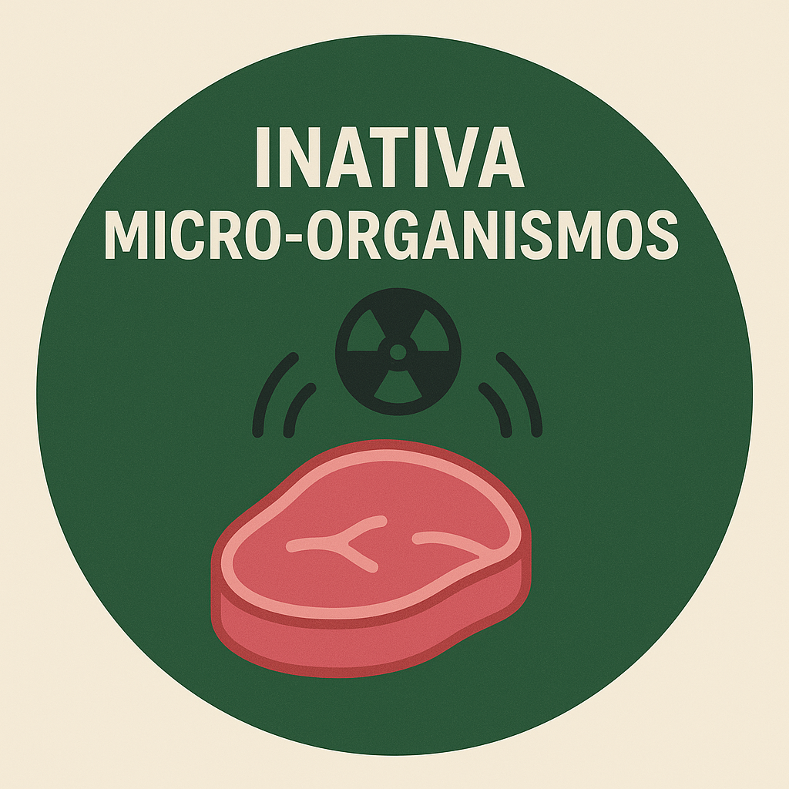
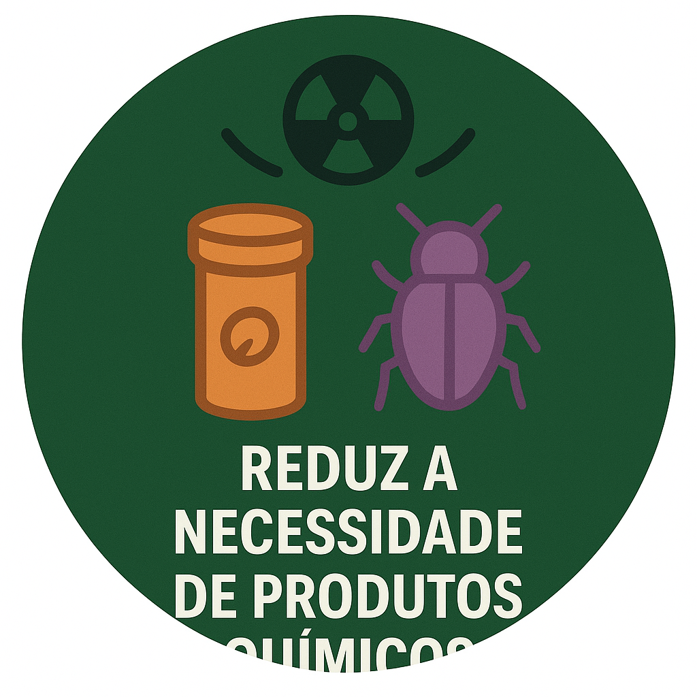
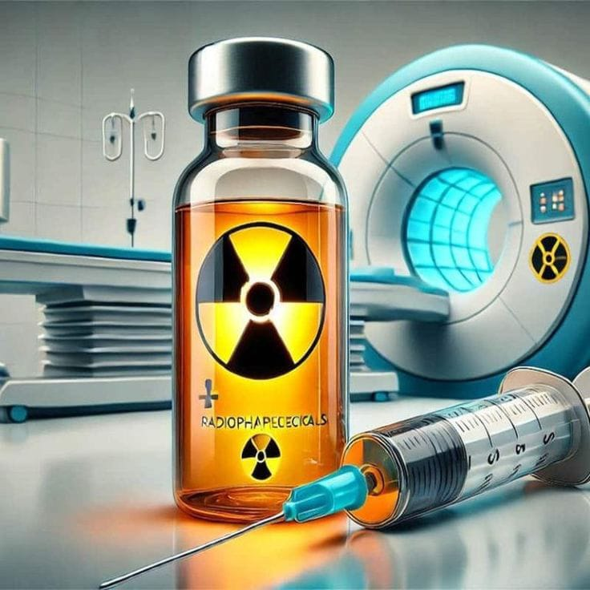
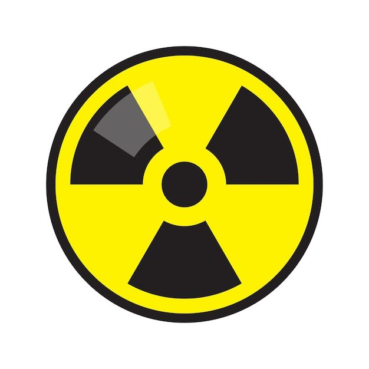
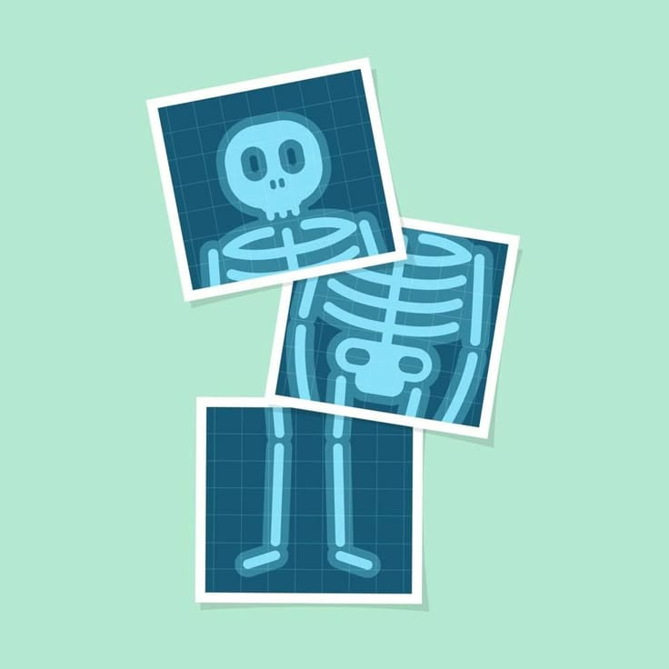

RADIOATIVIDADE
E A COMIDA QUE COMEMOS
Heroína da segurança alimentar
Introdução Conceito (Co-60) Benefícios Curiosidades / Mitos Cônicas ReferênciasO que é Radioatividade? - Adriel
A radioatividade é um fenômeno que resulta da emissão de energia por átomos, provocada em decorrência de uma desintegração, ou instabilidade, do núcleo de elementos químicos.
O que é a Irradiação de Alimentos? (Radiação Gama de Co-60) - Bianca
A irradiação de alimentos é um processo em que os alimentos são expostos a radiação gama proveniente
do Cobalto-60 (Co-60).
- Essa radiação mata micro-organismos, elimina insetos e retarda o amadurecimento, ajudando
a conservar os alimentos por mais tempo.
- O alimento não fica radioativo, pois a radiação só passa por ele - não deixa resíduos.
O Alimento Fica Radioativo? - Sarah
Quando um alimento é preservado por radiação, ele não se torna radioativo. Isso porque esse processo não mexe no núcleo dos átomos, que é a única parte que poderia causar radioatividade.
A radiação apenas passa pelo alimento para eliminar fungos, bactérias, insetos e impedir que ele estrague. Ela não fica dentro do alimento e não deixa nenhum tipo de resíduo.
No fim, o alimento continua o mesmo — só que mais seguro, mais limpo e com maior durabilidade, sem risco para a saúde
Radiação Para Combater Micro-organismos - José Kaio
* A radiação gama do Cobalto-60 penetra no alimento e atinge os micro-organismos.
* Quando a radiação chega até eles, ela quebra o DNA de bactérias, fungos e vírus.
* Com o DNA danificado, esses micro-organismos não conseguem se reproduzir.
* Sem se multiplicar, eles acabam morrendo naturalmente.
* Esse processo elimina micróbios que estragam o alimento ou causam doenças.
* Tudo ocorre sem aquecer o alimento e sem alterar seu sabor, cheiro ou nutrientes.
Benefícios - Mayara
Pode ser absorvida ou atravessar a matéria.
A absorção de energia em forma de calor pode destruir células e pequenos organismos, sendo útil em tratamentos médicos e esterilização.
Penetração da radiação
A penetração da radiação permite identificar radioisótopos em determinados locais — base da radioterapia e exames de imagem.
Fissão Nuclear
A fissão nuclear gera grande quantidade de energia, sendo usada na produção elétrica.
Curiosidades e Mitos - Ana Lívian
Mito 1. “Toda radiação é perigosa.”
Nem toda radiação faz mal. Existe radiação natural (do sol, do solo, de alimentos) e radiação controlada, usada em exames médicos, que é segura em pequenas doses.
Mito 2. “Radiação deixa tudo radioativo.”
Objetos expostos a radiação não se tornam radioativos — a menos que entrem em contato com material radioativo, o que é diferente.
Mito 3. “Radiação é sempre mortal.” :
A maioria das exposições comuns, como raio-x e tomografias, não causa morte. Danos graves só acontecem com doses muito altas.
Relação com Cônicas - Wilhane
•Cobalto-60 emite um feixe em formato de cone
• Quando o feixe atinge os alimentos, surgem diferentes cônicas:
- Carne(plana): Circuferência
- Frutas (curvas): elipse
- Embalagem: hipérbole
- Feixe visto de lado: parábola
• As cônicas ajudam a entender como a radiação se distribui no alimento.
Referências
- https://www.todamateria.com.br/radioatividade/
- https://www.todamateria.com.br/radioatividade/
- https://www.todamateria.com.br/radioatividade/